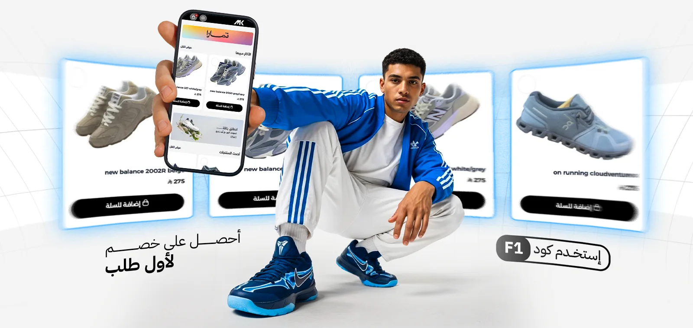

Brand identity / 2025
Sneakers Brand
MK MK is a premium youth sneaker brand born in Saudi Arabia, blending bold street style with elevated design. Crafted for the new generation, MK delivers comfort, quality, and identity in every step. More than footwear — it’s a statement.
© 2025 MK. Designed in Saudi. Built for those who don’t follow.
MK MK is a premium youth sneaker brand born in Saudi Arabia, blending bold street style with elevated design. Crafted for the new generation, MK delivers comfort, quality, and identity in every step. More than footwear — it’s a statement.

© 2025 MK. Designed in Saudi. Built for those who don’t follow.